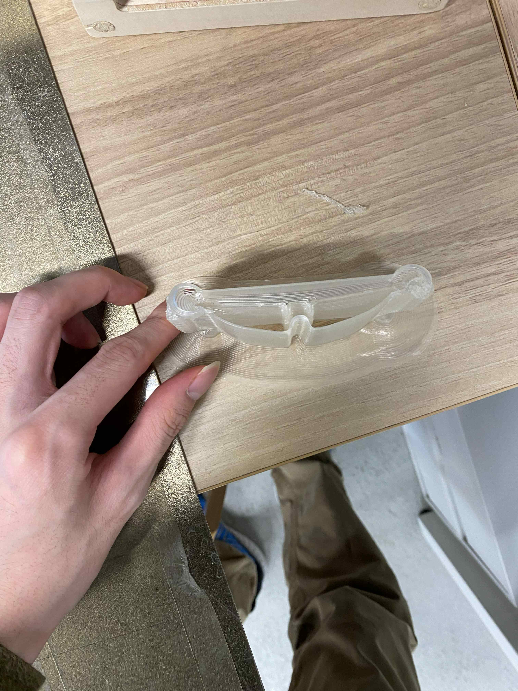
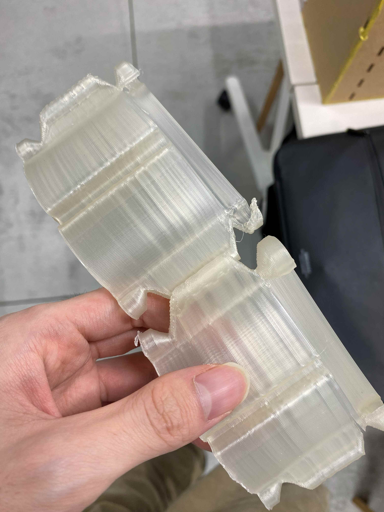
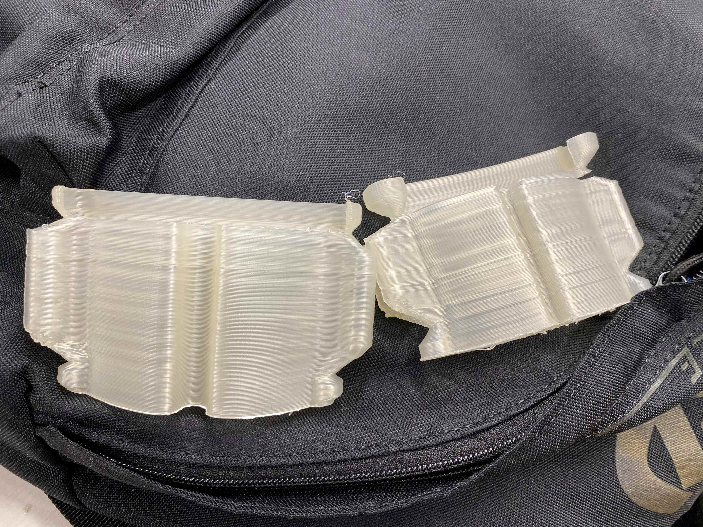

１．現状について
前回の構造でPPの印刷をしたが、ノズルの移動や反りが思っていたよりもひどかった
特にそれぞれのパーツを組み立てる接続部分が大きすぎたり、少し潰れたりと使えない状態だった
また、パーツ上の接続部が周りよりも少し大きかったせいか接続部と本体部の間にひびが入ってしまった
そこで、構造を一から再設計し、確実に一筆書きになるようにしたり
ノズルの開始位置をどの層でも同じになるようにした
また、接続部に関してもちゃんと接続できるように幅を調整している
そのため全体でいえば、衝撃吸収の部分はおおよそ完成しており接続部やその他反りなどの修正段階となっている
特にそれぞれのパーツを組み立てる接続部分が大きすぎたり、少し潰れたりと使えない状態だった

また、パーツ上の接続部が周りよりも少し大きかったせいか接続部と本体部の間にひびが入ってしまった

そこで、構造を一から再設計し、確実に一筆書きになるようにしたり
ノズルの開始位置をどの層でも同じになるようにした
また、接続部に関してもちゃんと接続できるように幅を調整している

そのため全体でいえば、衝撃吸収の部分はおおよそ完成しており接続部やその他反りなどの修正段階となっている
２．今後について
接続部の修正を現在も行っているが、PPの性質上
通常の素材の時よりもしっかりとした接続は期待できない
修正するための時間についてもそもそもあまり残っていない上に、
修正方法としては印刷して微調整を繰り返すしかないので時間が非常にかかる工程といえる
最低限の組み立てができることと数をそろえることを目標とする 数に関しては最低二つ、できれば四つ以上印刷しておきたい
通常の素材の時よりもしっかりとした接続は期待できない
修正するための時間についてもそもそもあまり残っていない上に、
修正方法としては印刷して微調整を繰り返すしかないので時間が非常にかかる工程といえる
最低限の組み立てができることと数をそろえることを目標とする 数に関しては最低二つ、できれば四つ以上印刷しておきたい
課題まとめ：
接続部の微調整（できる限り）
複数個の印刷
接続部の微調整（できる限り）
複数個の印刷